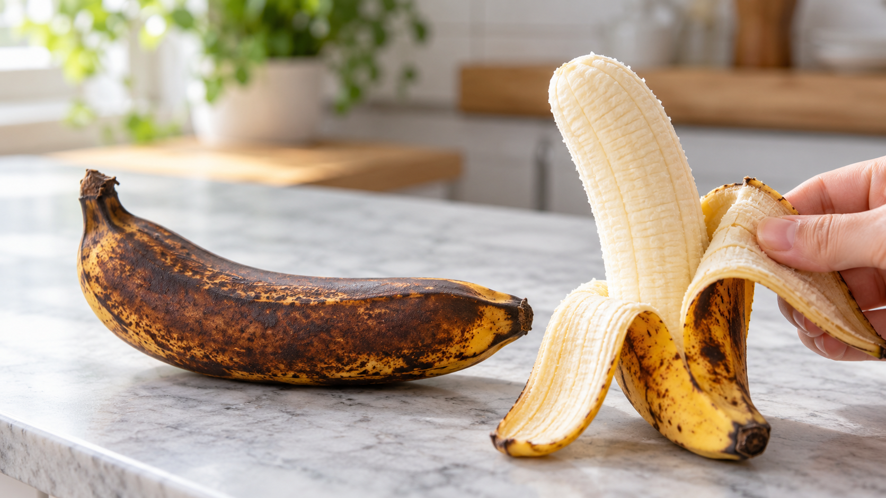

バナナは冷蔵庫で皮だけ黒くなる？｜皮と果肉の低温反応
昨日は黄色だったバナナを冷蔵庫から出すと、皮が茶色くなっている。中まで傷んだと思って捨てたくなるけれど、皮の色だけで決めてよいのだろうか。
結論は、熟したバナナなら冷蔵庫で短く保存し、食べるときは皮をむいて果肉を確かめること。冷たい場所では皮が先に黒く見えることがある。ただし、「果肉は必ず無事」という意味ではない。
皮の色と、果肉の熟し具合は別の変化
バナナは低い温度が苦手だ。寒さで皮の細胞の働きが乱れ、色が変わったり、褐色の部分ができたりする。この傷み方を「低温障害」という。カリフォルニア大学デービス校の収穫後資料は、低温障害で皮が変色し、強い場合には果肉も茶色くなると説明している。
皮が褐色になるときは、皮の中の色素や成分を変える反応も進む。バナナの皮を調べた研究では、低温に置いた皮に褐色の斑点が現れ、変色に関わる酵素の働きも変わった。酵素は、食材の中の変化を進める小さな働き手のようなものだ。ただし、皮が黒くなる仕組みを一つの酵素だけで説明することはできない。
研究で見えたことと、家庭での判断
皮と果肉を別々に測った研究では、低温保存したバナナの皮は褐色に向かい、果肉でも水分や硬さの変化が見られた。つまり、皮の変色が目立つ一方で、冷たさの影響は果肉にも及びうる。
一方、ユタ州立大学の家庭向け案内は、熟した後なら冷蔵庫で数日保存でき、皮が茶色くなっても果肉を食べられる場合があるとする。研究は未熟に近いバナナや管理された保存条件も扱っているため、家庭の完熟バナナが何日でも保つとは言えない。皮の色だけで捨てず、果肉の状態を見るのが実用的だ。
熟してから冷やし、食べるときに確かめる
バナナ1本とプレーンヨーグルト約100gを用意する。バナナは皮が黄色くなり、食べたい甘さに熟してから使う。未熟なうちに冷蔵すると熟しにくくなるため、大学の保存案内も熟してから冷やすよう勧めている。
- 熟したバナナを皮付きのまま冷蔵庫へ入れ、2〜3日を目安に使う。皮が茶色くなることはある。
- 食べる直前に皮をむき、果肉の色、硬さ、においを確かめる。傷んだ部分や異臭、カビがあれば食べない。
- 問題がなければ輪切りにしてヨーグルトにのせ、すぐに食べる。切った果肉は色が変わりやすいので、先に切り置きしない。
買い物でも、冷やす順番を決める
数日後に食べるなら、まだ青みのあるバナナを選び、室温で熟すのを待つ。今日食べたい黄色いバナナが余ったら、そこで冷蔵へ切り替える。見るべきなのは冷蔵庫へ入れる前の熟し具合と、食べる直前の果肉だ。これは品種や保存期間が違っても果肉が必ず保たれるという約束ではない。
まとめ
冷蔵庫で黒くなった皮だけを見て、すぐ捨てなくていい。熟してから冷やし、食べるときに果肉を確かめよう。